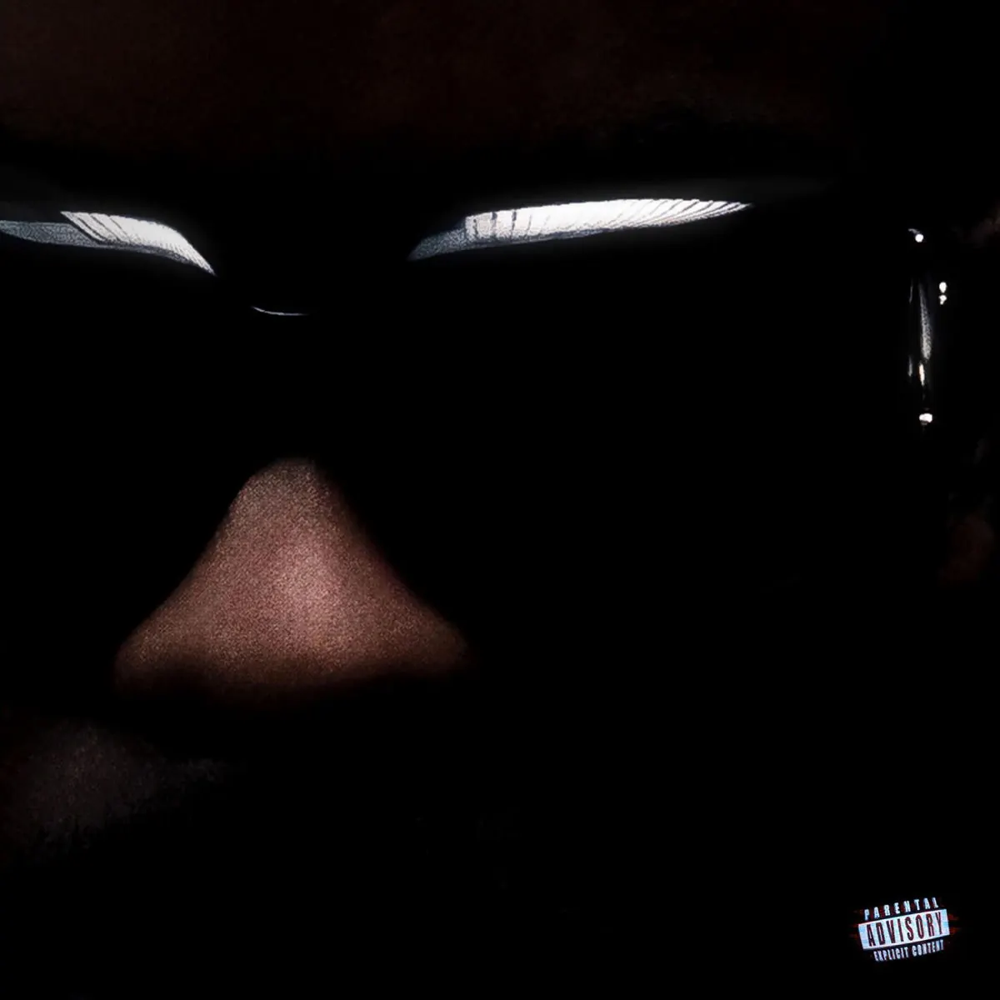

Publié le 10 octobre 2026

La Fève vient d'officialiser la sortie de son premier album intitulé FINIS-LES pour le 23 octobre 2026. Dévoilé à travers un teaser poignant scandé par la voix de sa mère, le projet réunit 23 morceaux. Si le rappeur convie des figures de premier plan comme Rim'K ou 1Pliké140, il réserve une place d'honneur à l'underground. Des pépites émergentes comme Bedry, 63KLUF et Flacko Cram apparaissent directement sur la tracklist. Chez Nova Corporation, nous suivons cette transition stratégique qui valide l'essor de la nouvelle garde du rap français.
Pourquoi la tracklist de FINIS-LES fait-elle événement ?
L'annonce de la tracklist de FINIS-LES marque un tournant majeur pour la carrière de La Fève. L'artiste a marqué la scène avec des morceaux en solo comme 2026 ou son passage marquant chez COLORS. Il construit aujourd'hui une proposition ambitieuse de 23 titres. Ce projet de longue haleine ne se contente pas de consolider sa position de tête d'affiche. Il agit comme un véritable révélateur pour toute une frange de la création indépendante. En distribuant des featurings clés à des artistes émergents, La Fève confirme son rôle de pont vers l'underground. La sélection des invités reflète une volonté d'équilibre sonore très travaillée. Les auditeurs retrouveront une diversité de styles allant de la trap sombre aux esthétiques mélodiques. L'album s'annonce déjà comme un point d'ancrage fort de la saison automnale.
Le tableau ci-dessous synthétise la liste des invités et des morceaux révélés pour cet album.
| Artiste invité | Titre du morceau | Profil de l'invité |
|---|---|---|
| Bedry & 63KLUF | NAN! | Duo underground en pleine ascension |
| Flacko Cram | RR | Figure émergente de la trap indépendante |
| Théodora | APPELLE LA POLICE | Révélation alternative et virale |
| 1Pliké140 | RS CARBON | Tête d'affiche de la drill française |
| Rim'K | Ville | Légende et pilier historique du rap français |
Comment La Fève propulse-t-il la nouvelle garde underground ?
L'intégration de Bedry, 63KLUF et Flacko Cram offre un coup de projecteur inédit à la scène underground. Bedry et 63KLUF partagent le titre NAN!, une collaboration attendue par les amateurs de sonorités denses. Flacko Cram s'illustre de son côté sur la piste RR, affirmant la présence d'une trap incisive. Pour ces jeunes artistes, figurer sur ce projet constitue un accélérateur de carrière fulgurant. La Fève ne se contente pas de suivre les tendances actuelles des réseaux sociaux. Il accorde une réelle crédibilité aux esthétiques émergentes en leur offrant des espaces privilégiés. Si vous souhaitez découvrir d'autres talents prometteurs, consultez notre sélection de nouveaux rappeurs à suivre. Cette démarche renforce la cohérence artistique globale du projet et réaffirme l'identité du label Walone.
Une stratégie de sortie taillée pour impacter le rap francophone
La préparation de la sortie s'appuie sur une montée en puissance méthodique depuis le début de l'été. Le single éponyme FINIS-LES a dépassé 3,3 millions d'écoutes sur YouTube Music. La stratégie visuelle frappe également par son originalité sur la pochette officielle. L'artiste apparaît de dos, marqué par une longue cicatrice sur la colonne vertébrale. Cette imagerie intime s'accompagne d'une annonce de tournée des Zéniths prévue pour début 2027. Chez Nova Corporation, nous saluons cette prise de risque artistique forte. Proposer 23 morceaux sans céder au remplissage facile demande une exigence rare. Rendez-vous le 23 octobre pour vérifier si l'album tient toutes ses promesses en streaming.